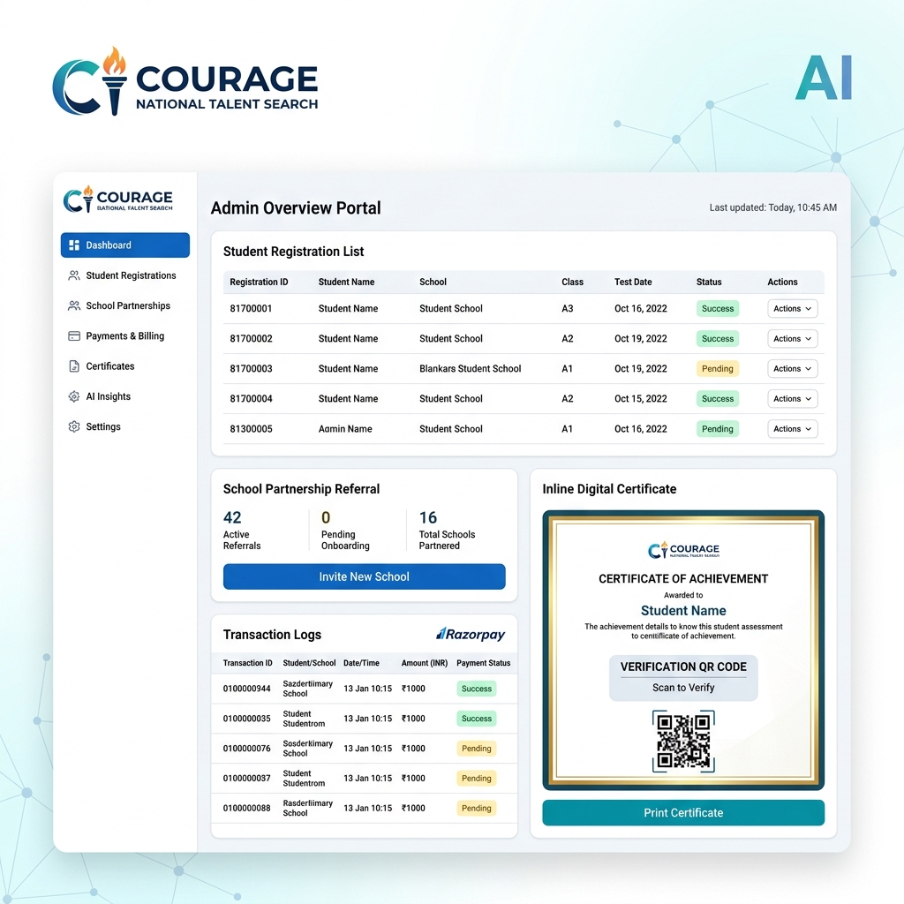

Courage National Talent Search (CNTS)
An enterprise-grade, high-scale national student assessment platform serving schools and student registrations with secure transaction pathways, bulk uploads, and automated cert verifications.

What is CNTS?
Courage National Talent Search (CNTS) is an assessment platform that evaluates aptitude, critical reasoning, and analytical skills for students in Classes 5–8 across India. Beyond test delivery, the system operates as a comprehensive B2B2C registration engine that enables school partners, parents, students, and system admins to manage accounts, process bulk Excel uploads, track quotas, verify digital certifications, and handle secure payment gateways.
Handling High-Scale Educational Ingestion
Building nationwide exam portals introduces challenges such as database locking during bulk registrations, duplicate transactions, security vulnerabilities, and mobile accessibility limitations in rural schools with weak bandwidth.
School Sponsorships
Schools require unique access keys (PINs) to enroll batches. Built a robust system to track quota limits and prevent concurrency errors.
Role-Based Access
The platform separates dashboards for Student, Parent, School, and Admin views with secure JWT cookie layers.
Verification Security
Certificates feature automated QR validation codes, allowing educational institutions to verify scores instantly via mobile scanning.
Payment Consistency
Razorpay webhooks guarantee candidates are registered only when payments complete, eliminating order discrepancy loops.
Key Operational Modules
Student dashboard
Provides multi-step registration pipelines, mocks, admit cards, result metrics, and support ticket panels.
School Partnership System
Onboarding tools let schools invite students via custom link tracking and bulk upload lists from Excel.
Administrative Console
An analytics dashboard for coupon management, student verification status logs, and transactional graphs.
SEO & High-Performance Design
To acquire school signups organically, CNTS implements premium search-engine practices: dynamic XML sitemap generators, JSON-LD structured schema metadata, Open Graph attributes, and image compression to guarantee rapid loading times on budget devices.